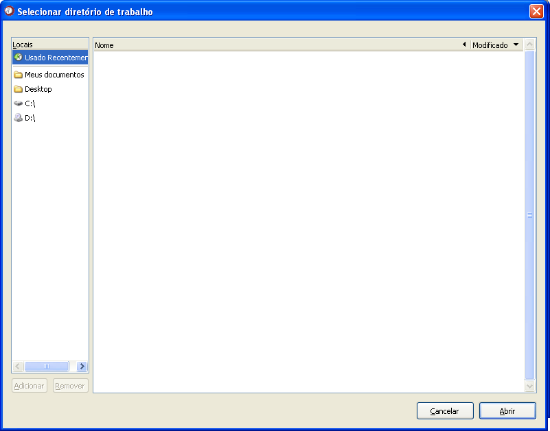

Alterar diretório de trabalho
Alterar diretório de trabalho

Figura 1. Janela "Alterar diretório de trabalho".
Ao abrir a função, que está apresentada na figura 1, clique em Localizar. Uma tela como a apresentada na figura 2 será aberta, e nela, indique o caminho para a pasta de trabalho de interesse. Em seguida, clique em Abrir.

Figura 2. Janela auxiliar para localizar bancos de dados.
Figura 2. Janela auxiliar para localizar bancos de dados.
Depois de selecionar o caminho, confirme o diretório indicado no campo "Novo diretório de trabalho" e clique em Executar. Ao utilizar qualquer função que necessite buscar ou salvar um arquivo, o diretório de trabalho, agora definido, será a referência.
Observe que, para criar uma nova pasta de trabalho, basta selecionar o diretório onde deseja criá-la e clicar em Create Folder. Preencha com o nome desejado para a pasta e em seguida, selecione-a.